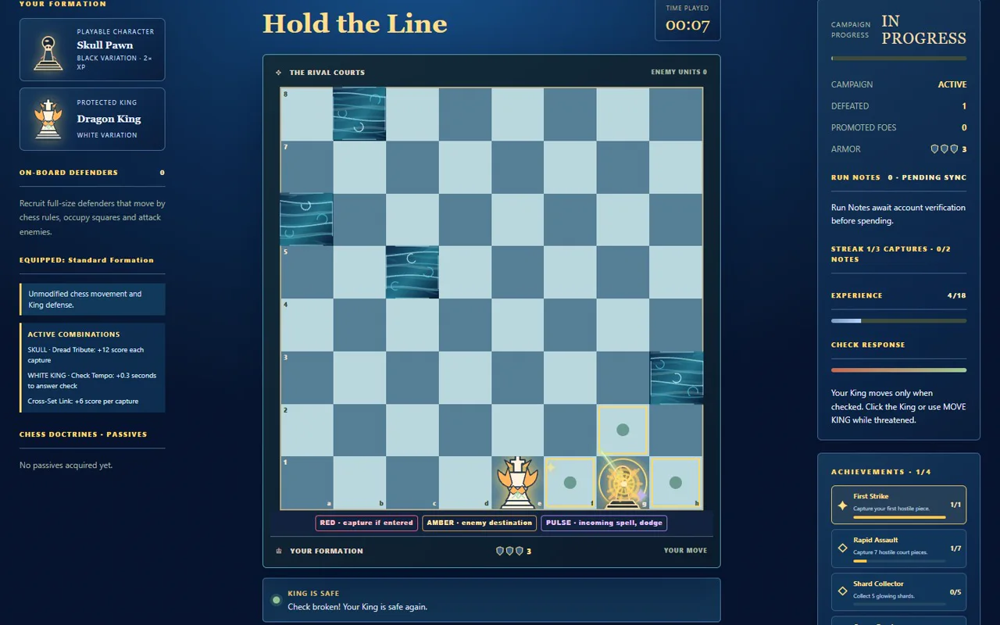
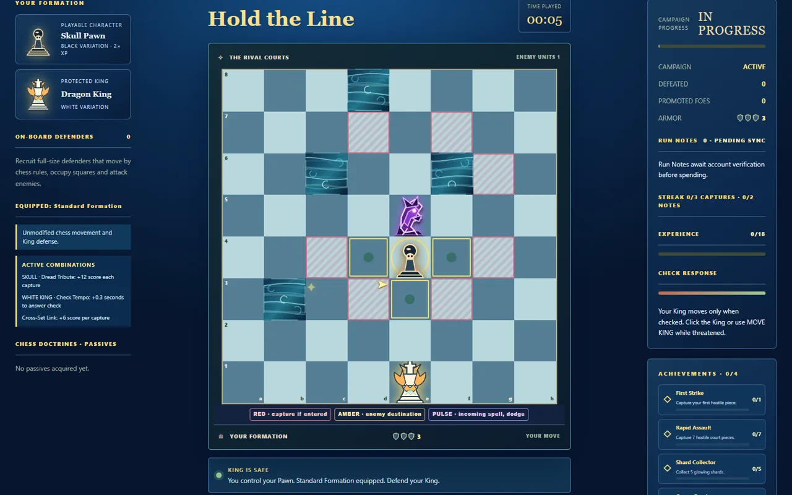
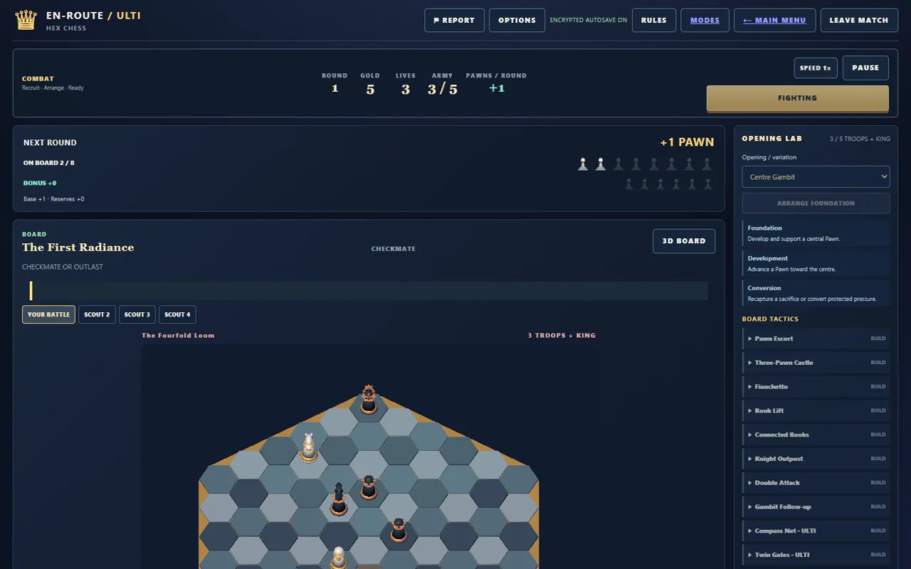
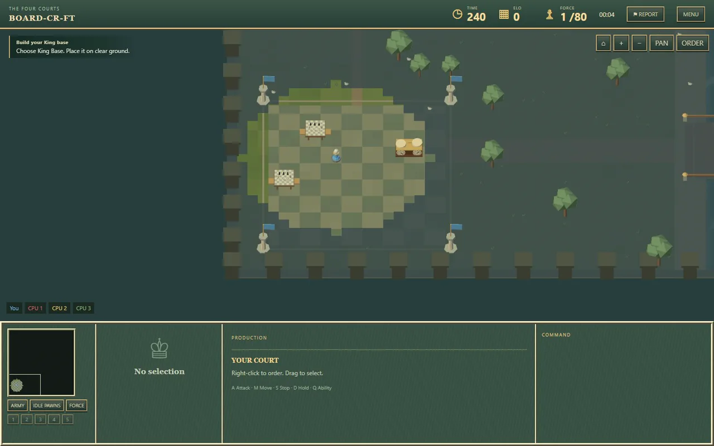

01 / SURVIVEBLITZKRIEG
Real-time chess survival. Protect your King while the enemy refuses to wait its turn.
Survive the rush. Outthink the rival court. Command the impossible. Three tactical worlds, one royal obsession.

THE GAMEPLAY TRAILER
A 68-second cinematic trailer made from genuine build 0.2.20 gameplay, with an original music score and effects synchronized to the action.
THREE MODES. THREE DIFFERENT WARS.
Every mode changes what winning means. Pick your discipline and take the board apart.

01 / SURVIVEReal-time chess survival. Protect your King while the enemy refuses to wait its turn.

02 / OUTTHINKChoose your faction, shape your formation and watch every decision enter the fight.

03 / COMMANDLead a living chess army. Build your court, manage resources and contest the map.
THE NEXT MOVE IS YOURS
One launcher. Three tactical worlds. The next update is part of the journey.
GET EN-ROUTEWINDOWS LAUNCHER